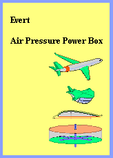
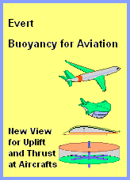

Viktor Schauberger was an 'alternative' with his astonishing statements on the design of fluid movements. Based on his ideas, I investigated the movement of fluid molecules in pipes or containers as well as the movement of rigid bodies in free fluid. The Outstanding Results are listed below. These topics of Fluid-Technology are extensively elaborated in special chapters. Bold students - as well as practitioners - should examine the considerations, for example these:
 |
 |
 |
 |
My invention of the 'potential swirl tube' (which is still not used by many manufacturers) brought great commercial success. My explanations of the nozzle effect made it clear for the first time, even to many scientists, how the 'phenomenal' increase in the kinetic energy of the fluid throughput there comes about. Fluid can be advantageously 'manipulated', i.e. a greater effect can be achieved with little effort.
It is also phenomenal that there are a dozen theories on lift on wings. All of them are rigidly based on the idea of force = counterforce, in this case according to the principle of 'push air down = lift airplane up'. In fact, you get the lift almost 'for free' (an indirect use of free gravitational energy). If used skillfully, airplanes and helicopters, for example, could fly completely silently without external engines or rotors.
AETHER-PHYSICS AND -PHILOSOPHY
Yet there is a well-known narrative all over the world: All is ONE. My 'revolutionary' approach was to accept this statement as a physical fact: there is really only this one 'material' substance - and all phenomena can only be special movement patterns of this aether in the aether. And my axiom was just as revolutionary: this aether must be a gapless unity, i.e. without separated particles, of equal density throughout - because only within such a continuum the energy-constant can really exist.
Outstanding Results are listed again in the form of keywords. This Something Moting is elaborated in many chapters. These are not always easy to read because they practically form the protocol of my decades of research with totally new aspects.
A detailed overview can also be found in this
Summary or my Epilog on the Aether. I cannot understand how official physics ignores this elementary question about the background of all being (and the quantum-mechanics particle-zoo is no answer). I have applied my above approach to about a hundred physical phenomena and found viable explanations, from electrons to galaxies, from atomic force to gravity. Crystal-clear evidence is available, presented in a small space, for example, in
Aether-Universe - Assertions and Evidence.
This idea could be more real than the perception of our environment as a sequence of colorful images. Even everything 'material', such as our body, is only a fact feigned to our senses. In any case, we define ourselves primarily as a mental-psychic entity. And this idea is so massive that our soul and everything spiritual will be manifested just as real in the aether-substance, in the almost infinitely wide spectrum of its vibrations. Everything really is from / in One.
AETHER-ELETRO-TECHNOLOGY
I have developed approaches to this in my
Aether-Elektro-Technique. I was able to show plausible explanations for some well-known phenomena and 'unbelievable' experiments (see magnets and current, unipolar generator, railgun and ball-bearing effects, Tilley cone generator, capacitors, etc.). Based on this, I was able to develop proposals for electric motors and generators - which harness the free energy of the omnipresent aether movements. Exactly such over-unity devices (more energy output than required input) are the objectives of the 'alternative physicists' mentioned above. The only question is when they will actually be allowed to come onto the market.
Of course, this results in totally new insights into the nature of electro-magnetic phenomena, which I was able to present in various chapters. Due to my age, I did not want to and could not work out all the topics I had in mind (and others are called upon to continue this work). I would like to comment one last time on the sketch at the top right.
NIKOLA TESLA PIERCE ARROW
Due to solar radiation and atmospheric movements, there is practically unlimited electrical charge in the air as well as on/in the earth. In our environment it is of the same strength, so that we do not feel it. If a device (or this car) is connected to the earth (E), it has a 'normal' charge (NC) rather than no charge. Electromagnetic energy can also be collected from the atmosphere (A) using known antenna technology. Normal voltage could also be transferred to higher voltage in various ways.
A layer of Electric Charge is a layer of structured aether swinging motions. They are pushed onto material surfaces by the general pressure of Free Aether. That chaotic pressure pushes down connected charges onto same level. However, based on its well structured motion pattern, charge can not be pushed down to zero.
Thus an Electric Current can come up if only exists a voltage gradient. The motion structure becomes overlayed by stroke components left-vorward into flow-direction, resulting the appearance of current (while the aether really does not move far distances). If charges become balanced, the current becomes weaker to finally zero.
Tesla's key component produces zero charge (ZC), forming a sink of zero charge. In principle, this is achieved by feeding the current into a closed circuit. The similar movement patterns meet in opposite directions, adding up to zero aether movement for a short moment. The Free Aether can shift together both flows completely. The previously given structured motions of flows like charges become replace by the chaotic Free Aether.
To start the system, the initial normal charge must be removed. To do this, Tesla pushed a piece of wood into the box and thus a magnet through the air coil. The generated currents are eliminated in the counter-rotating windings (applied twice for alternating current). Up to now, the focus has been on the 'production' of electricity. Now the primary task is to 'eliminate' it. The aim is to develop the best construction variant for this energy sink.
The distinction between charge and flow is important here. With varying degrees of static charge, a part can 'slip' from one storage tank to the other, increasingly slower, until it is equalized. Here, however, the sink is not filled up. From the opening to the closing of a switch, the flow can run unrestricted, as the voltage keeps constant. It´s important to keep the charge moving, e.g. it should continously already rotate in the intermediate storage tanks (NC), for example like shown at the Elektric-Ring-Generator). A capacitor cascade can also cause a short and heavy surge of current to rush through the transformer (T) and supply the load (V).
The law of energy constancy is maintained: natural radiation / charge is destroyed in the sink, usable energy is generated in the transformer and transferred to another form in the consumer. Ultimately, Tesla used freely available 'radiations', i.e. electromagnetic vortex systems in our aether environment, which are permanently recharged (directly or indirectly) by the sun. Tesla - a real alternative.
Previous axioms and considerations concerning the aether and electromagnetism might appear rather strange. At the other hand, common physical understanding was not able to solve the riddle of Teslas car-drive, since generations. Every new and different approach affects a better chance for the actual energy problems.
These latest suggestions on the Tesla-Elektric-Sink are also available for download.
THANKS - GOODBYE
Now are available autonomous running machines with huge energy-output, seven times more than demanded energy-input. These are real existing, simply mechanical working Perpetuum Mobile, using the ´free energy´ of gravity! Still one riddles why this could work. The essention reason is: the input of air must not be pressed against the static pressure down there - if the air stream is added into the flowing water - analogue to a water-jet-pump - demanding much less pressure-power.
Now, the reality of these machines forces all hobby like prefessional ´experts´ to think about new facilities for using any kind of Free Energy. As a memory I will add some papers of 2014/15 from my old wesite.
Flexible Buoyancy Power Station ´Nobody knows the universe just exactely. However one agreed on the Standard-Model. Starting with the Big-Bang-Theory. And also all following theories are just conjectures.´ More explicit: these are no precise statements based on facts, but only vague speculations, actually not allowed at sciences, but simply some worthless fictive calculations.
At first: gravity force is defined as an natural constant - even it is strongly variing in space and time. Details one might find at
Nature of Gravity, down at chapters Differing and Variable Gravity Forces.
If only an apple falls down from the tree, the conclusion is not allowed, also the sun must fall into the centre of the Milkyway. Especially, as the known materia is not sufficiently available. Scientifically, it´s not allowed to assume an additional fictive ´Dark-Matter´ of multible size. Inventing ´Dark-Holes´ is absolute arbitrary. Handcrafts would talk about ´blatant botch´.
Nobody can imagine how an attracting force could work by distances of many lightyears.
However it´s still supposed the sun is affected by a centripetal force. A corresponding strong centrifugal power exists if the sun is flying around the centre by 150 km/s. Unfortunately the sun is running much faster with 220 km/s. Again, the calculations only fit if one assumes the fictive existence of a multiple stronger ´Dark-Energy´. No problem with your next speeding-ticket, if only you claim that flame excuse for driving too fast.
Common understanding thus claims the known materia to be only 5 % of all necessary masses/energies. If the weather forcast would produce such a hit-ratio of 1:20, not only the data were doubious. Without any doubts, whole model of items and formalism were totally wrong. The (astro-) physic sciences generally must question the understanding of masses, inertia, energies and gravity. Some ideas are listed at Milkyway and Sunsystem.
So finally one should start searching for logic clear and comprehensible solutions. With my
eMail to Lisa Randall I invited to follow the layman-ideas of a logic-craftsman, calm and unbiased. Might anybody anytime follow these incitations. A good approach would be the attempt to falsify my claims and proofs in details.
I was able to produce some approaches with the
Aether-Elektro-Technics. I was able to show plausible explications for some wellknown phenomena and ´inbelievable´ experiments (see magnets and current, unipolare generator, railgun and ball bearing effects, Tilley generator, condenser etc.).
The actual situation all around the world in many respects urgently demands the cognizance All is One, by verbal like in physical sense. Essential consequences and possibilities could result, in material sense like for the spiritual consciousness.
Age-relate, i can no longer work at this subject. Nevertheless I still hope someone will grasp these most grave ideas, will go on researching and convincing further people.
Only one final time I´ll remember to the fact, physics can achieve substantial progress only if the aether is accepted as universal medium of all being. The final chapter
08.23. Epilog on the Aether (also available as print version) shows only some essential arguments only in brief.
Flying is fascinating, already that viewing top-down, even it´s only ´virtually´ e.g. from a camera-drone. Flying seems quite natural, even most basic problems are involved: for example one must overcome the gravity - and he real essence of that appearance is an absolutely unsolved problem.
Flying seems only possible, if the down-directed gravity-force is countered with an even stronger upward-directed force - and strange enough, that force is created by accelerating air downward. That ´air-down = plane-up´ is common understanding. Even leading scientists vehemently stand up for that untenable idea, as I had to experience at diverse discussions.
They handle the air like a solid body and believe Newton´s mechanical laws would be fully valid. Realiter however, the air particles are moving on and on - and it´s absolutely not sure, why that process is running free of losses, infinitely. Within gases, an other law is superior: the particles, all times, will fly into direction of less density. And the law of energy-constant here is valid by the fact: increased dynamic pressure of a flow results corresponding less static pressure aside.
So the true cause of that ´dynamic uplift´ is matched by that economic process: instead producing stronger counter-pressure it´s absolutely sufficient to reduce the static air pressure at the upper face of a profile by an accelerated flow.
The Twist-Cone-Engine is an other constructive proposal, however specialists will soon create much better solutions - as soon they got the inside about the true cause, why planes are flying as weightless like some birds.
That model was designed to approve the elementary principle most simplistic. However, it got too simplistic!
Nevertheless, the mistake was found soon and improved solutions were deduced, so suitable flows can be generated even better.
The analyses and corrections are discussed at new chapter 05.21. Experiments and Consequences (also available in a print version).
So this subject is finished for me - however the professionals of aero-techniques (and other vehicle-technologies) should just start with intensive investigations. Because the conception of the Bowl-Engine still is most suitable for generating uplift and thrust forces - and naturally the professionals could deduce much better solutions from failing experiments.
The essential constructional elements are shown by a simple fuctional model.
I am writing fingers to the bones - however merely one believes in this unbelievable story. Who will help that story come true? Many thanks in advance! 
Therefore the new book Air Pressure Power Box contains all four chapters of the Bowl-Engines and the Flettner-Box, in addition the two general chapters concerning uplift at wings.
At this new book, the essence of that invention is pointed out at one page of a Summary inclusive Functional Model, shown by a simple sketch.
The historic freighter ´Buckau´ with Flettner´s spinning cylinders cruised better than conventional sail-ships. 
2016-01-31 - Aero-Statics of Bowl-Engines
At new chapter Aero-Statics of Bowl-Engines the new insights and possibilities are confirmed by data examples of the A320.
To the end of 2015 some reviewed chapters to the Aero-Technology are published again (lift at wings, trout-engine, prop- and jet-engines etc.).
At first, thus only the subject of ´Aether-Physics and -Philosophy´ was reloaded. Today, the aether (or space-energy, zero-point-energy etc.) is discussed more frequently, however most only by vague ideas. Opposite, my descriptions of that ´Something Moving´ (also available as a book) presents most precise definitions, analyses and explanations. With that ´Dancing of Satellites´ (also as a book), the existence of a real aether is approved clearly (e.g. also explaining the experiments of Morley-Michelson e.a.). One will hardly find comparable precise statements at the web or literature.
However, my considerations concerning the ´Aether-Electro-Technics´ by view of that aether are not completed up to now (perhaps I can add some more ideas at the following years). It would be most important for specialists to take these starting points for researching all appearances of the electromagnetism. Most important consequences would result for the usage of that energy.
It requires spatial imagination to follow the movements of the above fluid particles in 3D space. It is even more difficult to visualize and understand the motion sequences in a plasma. This is why many readers 'refuse' to think about the subject of the aether.


Of course, my considerations are not flawless. The above illustration on the right, for example, is wrong. You have to analyze the superposition of 'swinging with impact' on a vortex ball in more detail to understand why we drift through space. For me, the realization was shocking: we are not made of solid particles, we are not even made of a portion of 'our own' aether, just our complex vortex pattern floating through the (fairly stationary) universe-wide aether.
This new understanding of the basis of all existence could open-up completely new insights in many fields of science. For example, practical electrical engineering works amazingly well. However, we don't really know what happens and why. Many terms are only defined by circular reasoning. At best, there are model 'narratives'. Only with a concrete understanding of the real background of electromagnetism can more effective solutions be developed.


The chapter Introduction and Objectives provides an introduction to the aether-electro technique. As with my definition of the aether, I again set revolutionary axioms for electromagnetism: there are no positive particles, there are only (negative) electrons. There is no positive charge, there is only more or less (negative) charge. There is no force of attraction and no force of repulsion, there is only the general pressure of the Free Aether (with its chaotic movements) on structured elements (with their well-ordered oscillations).
In 1931, Nikola Tesla demonstrated a car that worked without conventional energy sources. 'Before many generations have passed ...' he assumed that his successors could also handle free energy. Obviously, however, they didn't understand ... or powerful people were/are powerful enough to establish the narrative of the 'non-feasible'. Let's hope that 'before a century has passed ...'. Based on my understanding of the Aether movements of electromagnetic phenomena, I would like to point out the source and sink of the energy used by Tesla (see sketch above right).
2024-01-01 / 2015-05-01 BUOYANCY POWER STATIONS
 First machines using buoyancy came up already ten years ago. These machines used water tanks and many containers connected by chains. Containers filled up by water were moving down. Containers filled up with air were moving up, based on buoyancy. Finally the mechanic motion is transferred into electric current.
First machines using buoyancy came up already ten years ago. These machines used water tanks and many containers connected by chains. Containers filled up by water were moving down. Containers filled up with air were moving up, based on buoyancy. Finally the mechanic motion is transferred into electric current.
with comprehensive description of gravity and diverse constructional elements of these machines
Buoyancy Power Stations - Perpetuum Mobile of Fourth Kind
with the general solution for usage of Free Energy - and theoretic approval why these machines naturally are working
Buoyancy Power Stations - how and why they work
common counter-arguments are refuted, inclusive outlook to further development
Perpetuum Mobile of Forth Kind
Already in 2002 the PM 3.Kind was deduced from experiences with rotor-systems (today merely relevant).
PM 4.Kind however is a generally valid ´law´ for usage of Free Energy. Based on these rules, machines also at other subjects of physics can be constructed - with energy-surplus guarantee.
2023-04-15 - PULSATING COSMOS
 Welcome, dear visitor at this website!
Welcome, dear visitor at this website!
If Phaeton crashed his fathers Sun car or Hubble presents new fabulous photos - the processes within the comos are mystical.
All is steady moving, mostly much more harmoniously than this simple animation can show.
We won´t feel, however we are drifting through space, softly pushed ahead by cosmic pulsation.
If you think this would be mysterious, please read short article
Aether-Universe, Claims and Evidence. Physics pure.
You will find perspectives and you will find why this website should be studied intensively.
Times are calling for changes, quite sure in physical and technologic sense, above this a new awareness could help.
2023-03-21 - PROF. LISA RANDALL
 That lady is well known by diverse sientic books and she is welcome at all astro-congresses around the globe. The German periodical Focus 9/2023 mentioned ´all essential theories for Dark-Matter´ come from her. Also is mentioned:
That lady is well known by diverse sientic books and she is welcome at all astro-congresses around the globe. The German periodical Focus 9/2023 mentioned ´all essential theories for Dark-Matter´ come from her. Also is mentioned:
2023-03-15
CLIMA-Change demands new ENERGY
based on new understanding of ELECTRICITY


The Climachange is not to solve by interdiction of common technics but only by new and better methods. Much more electric current is necessary. Electricity functions quite well - despite off nowbody really knows why.
Only a ´model-like understanding´ is valid based on many abstracte terms. Finally a concrete understanding of the real background of electromagnetism will allow to develope more effective solutions.
Based on these studies I was able to present some proposals for electric motors and generators - using the Free Energy of the omnipesent aether movements.
That´s only the start of a new understanding of physics and new energy handling. Young rebellious peoples are asked to understand and to realize!
2023-03-01 - Online again
As still exists great interest this website is put online again.
2017-12-01 - Epilog on the Aether
This website exists since 20 years. The web does not forget anything. So it´s up to any publisher to delete obsolete stuff. So I´ll delete this website www.evert.de completely in 2018.
2016-12-31 - Magic Flight - Twist-Cone-Engine
One final time a new chapter:
05.22. Magic Flight - Twist-Cone-Engine (also available as a print version). Even more economical and environmental friendly would be that procedure: instead of pushing huge masses of air down or backward, it´s absolutely sufficient to keep circulating a small mass of air within a closed system. Different speeds at opposite faces result differing static pressures and the generated forces can be used for uplift (e.g. of helicopters) or thrust (e.g. also for airplanes and other vehicles).
Even more economical and environmental friendly would be that procedure: instead of pushing huge masses of air down or backward, it´s absolutely sufficient to keep circulating a small mass of air within a closed system. Different speeds at opposite faces result differing static pressures and the generated forces can be used for uplift (e.g. of helicopters) or thrust (e.g. also for airplanes and other vehicles).
 2016-06-10 - Experiments and Consequences
2016-06-10 - Experiments and Consequences
Indeed, two collegues did build that functional model and I did construct also a version of. Naturally the results were the usual ones: total flops, totally worthlesss wasted time and money!
 2016-03-31 - Summary and Functional Model
2016-03-31 - Summary and Functional Model
At the new Book
a summery concentrates the main points of view at one sheet of paper.
Also that Summary is available by a separate pdf-print-file.
If somebody would build that functional model and one could see the effect at a video -
everything would be quite natural at the very moment.
All chapters here are available also by pdf-files for download and print-out.
However these complex texts and figures are better to study in printed version.
 2016-03-15 - Discussion and Flettner-Box
2016-03-15 - Discussion and Flettner-Box
Up to now, the usage of Free Energy of molecular motions is not usual or even ´unbelievable´.
Some examples of new chapter Pros and Cons for Bowl-Engines might show, why and how these effects are working ´perfectly natural´.
That principle also can drive without natural winds, within a closed system, at water like at land - and as Rotation-Power-Station.
So that Flettner - Box can not only deliver thrust but also mechanic turning momentum, e.g. for driving an electric generator.
The texts and pictures of the invention ´Bowl-Engine´ now are also available as a Book.
It was necessary to precise once more that quite new point of view:
the grave difference between mechanic lifting by reaction-principle
and the buoyancy by the rules of hydro-statics and aero-dynamics.
A good overview presents the article Thrust for Aeronautics.
2015-12-31 - Fluid-Technology / Invention of the Bowl-Engine
Might be I was able to produce analyses of similar quality at an other subject: the ´Fluid-Technology´. So also these parts were reviewed and reduced to essential items. First parts were reloaded at November 2015 (basics).
Totally new is my invention of the Air-Pressure-Bowl-Engine - which might start a revolution at the aero techniques.
A brief overview gives the article Air-Pressure-Bowl-Engine - new Aero-Technology.
2015-06-30 - Revision of the Website
Since previous century, this website did grow up to 2500 files with a volume of about 80 MB. So a revision was necessary with a reduction to essential statements.
Home